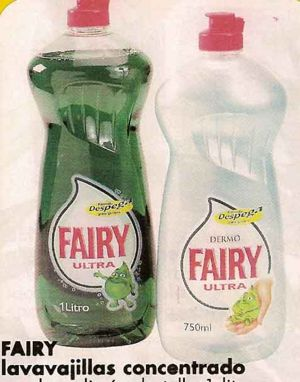
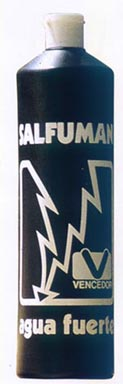

Mistol
 De: La Frikipedia, la enciclopedia extremadamente seria.
De: La Frikipedia, la enciclopedia extremadamente seria.
«mistol, mistol, mistol, mistol, mistool, hemos venido, a fregar platos, tenedores y un cucharóoon»
~ borracho cantado el himno del cádiz con la letra mistolizada
No confundir con mistela, el mistol es un líquido increíble, de miles de propiedades varias, entre las que se encuentran su poder desincrustante, que incluso ha conseguido desincrustar a políticos de su sillón oficial.Se cree que el maná que les cayó a los israelitas del cielo, en realidad era Mistol procedente de un ovni donde estaban lavando los platos.
Composición
 Pobre sucedáneo de este fantástico líquido
 Salfumán, pobre sustituto del mistol
Por temas de mantener la fórmula segura y virginal, no podemos contar aquí todos los ingredientes (en realidad es porque no hemos conseguido esa información). Daremos por tanto, solamente los componentes que pasen de un tanto por cierto e indeterminado:
- Tungsteno: más de un 40% por gramo y un 20% por Kg. Gracias a su color blanquecino, obtenemos mistoles de todos los colores y tamaños.
- moléculas de nanas: esto aporta la principal fuente desincrustante.
- semen: para hidratar las manos.
- hagua: sólo en un 1% por gramo y un 0,5% por Kg. Su mínima cantidad es lo que diferencia el Mistol de la marca Hacendado.
- gusanos muertos: la marca lo niega, pero a nosotros no nos engaña (véase Paranoia).
Efectos
La santísima trinidad lavavajíllica. También sirve contra el ardor de estómago
Todos los efectos del mistol no han sido averigüados aún, pero se sospecha de unos cuantos, más poderosos incluso que los de la coca cola:
- Limpia.Pero muy limpio eh, pero limpísimo. Es bien sabido que los administradores de la frikipedia siempre llevan un bote para deshacer vandalismos.
- Su poder de limpieza es tal, que 60 botellas bastarían para limpiar la casa de torrente.
- Quita la caspa (El cine español necesita mucho mistol).
- Descontamina y protege de la radiactividad. Manuel Fraga impregno sus calzones de mistol al bañarse en palomares.
- Su versión con vinagre sirve para aderezar ensaladas
- Su versión con bicarbonato cura el ardor de estómago
- Su versión antivirus es peligrosa, pues si cae en la placa base puede cargarse los componentes electrónicos de su interior, pero por lo menos no queda ni un virus.
- Su versión desengrasante contiene grandes cantidades de alcohol. Aznar se ha aficionado al mistol ultimamente
- corea del norte y cuba no les afectó debido a sus yacimientos de kriptonita, pero acabó con casi todos los demás.
Recetas con Mistol
Como potente antigrasas que es, los dentrocrinos, recomiendan hacer comidas sanas y naturales, mezcladas con Mistol. Para ahorraros tener que pagar a un lentrocrino para que os de unas mísera recetas, aquí van algunas.
- Grasa a a la Madrileña con Mistol: mezclar en un recipiente: hagua, panceta, bacon, tocino y medio litro de Mistol. Dejar cocer durante 30 segundos y servir en un plato limpio.
- Cocido Asturiano con Mistol: es exactamente igual que el cocido Madrileño, pero parace ser que este tenía licencia GNU y los asturianos han hecho su propia versión cambiando los garbanzos por lentejas. A esto le añadimos 2 litros de Mistol y servimos en un plato limpio.
Notas aclaratorias
La buena publicidad que le hemos hecho a este producto se debe a la subvención económica que recibimos de mistol.inc . Si se da una vulta por aquí, tal vez algún día podamos meter mas coñas. Gracias. ya van 15 pringaos que pican, ¿por que usted no?
Autor(es):
- Doctor grijander
- Frikiman
- Aque
Frikipedia 2005-2016, Licencia
GFDL 1.2 - Extraído por FrikiLeaks